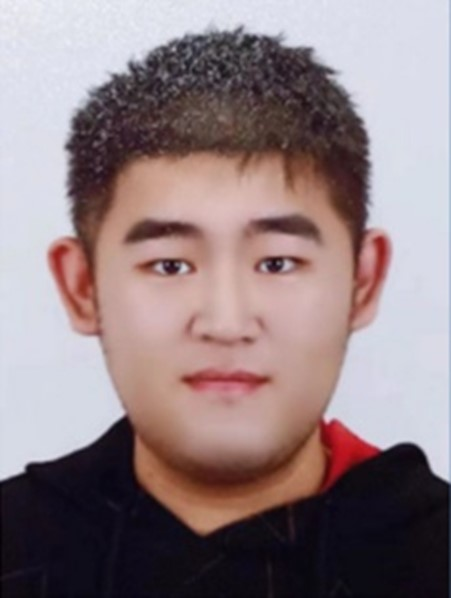

|
Seeking Research Opportunities and Expressing Interest in Pursuing a PhD

Name: Haotian Chen (Chahot) Gender: Male Birth: 1998.03.30 Languages:Chinese (Native), Korean (Fluent), English (Intermediate) Foreign Language Test:
Email: a670627525@gmail.com Objective One Ph.D. candidate position in the field of cybersecurity or in the field of quantum security. Highly motivated and detail-oriented Computer Science PhD candidate with a strong background in cybersecurity, IoT, and quantum security. Continue learning in the field of cyber security before finalizing quantum security as a 1st research interest. Gain a foundational understanding of blockchain, digital twins, the metaverse, and smart cities. Has four years of experience in running professional technology blogs, and continues to create in the field of quantum security and cybersecurity, and has been certified as a "Blogging Expert" and a "Quality Creator in the Field of Cybersecurity" by CSDN, China's largest technology blog. Entered the UCS (Ubiquitous Computing and Security) research laboratory and began to engage in academic research from March 2021. · Ph. D. Candidate in Computer Science and Engineering (2021.09 - Present) (GPA = 4.27/4.50, 97.4/100) at Seoul National University of Science and Technology (SeoulTech), Seoul, Rep. of Korea. (Decided to drop out of current school)
· B.Sc. in Computer Science and Engineering (2017.03 – 2021.08) (GPA = 3.64/4.50, 90.2/100) at Seoul National University of Science and Technology (SeoulTech), Seoul, Rep. of Korea. [Took a semester off because of the covid situation]
· Ph.D. Research Student (2020 August - Present) at Seoultech, Seoul, Rep. of Korea
· Published work
· Submitted work
· Participated in research projects (2021 - present) at Seoultech, Seoul, Rep. of Korea
· Technical Blog Experience (2019 - Present) at Alibaba Cloud Developer Community and CSDN, China. Subscriptions more than 15,000 and total number of visits is about 500,000.(Access Link: here)
· Examiner for the security section of the Korean Information Processing Technology Professional Certification Examination. · Signed a contract with Publishing House of Electronics Industry (PHEI) in early March 2023, and is in the process of writing (sole author) a book with the proposed title "Quantum Security: Exploring New Frontiers in Information Protection", the first version of the final draft has been completed and passed the first review. Awards and Recognitions· Scholarships
· Best Paper Award in International Conference
· Recognitions in Technical Blog
· Communication Systems · Coding and applications: Qiskit, Python, Java, some C++ · Operating Systems: Windows · Research Tools: OpenAI, Consensus, ChatPDF, Web of Science, Scopus, Google Scholar · Software Tools: Docker, Wireshark, Nmap, Jupyter-Notebooks, GSN3, VMWare Soft Skills· Strong research and analytical abilities · Detail-oriented and meticulous · Capacity for sustained independent work · Good communication and collaboration skills · Perseverance and determination · Passion for continuous learning and self-improvement · Effective problem-solving skills · Strong work ethic and dedication to quality · Supportive and collaborative team player Motivations: I am currently pursuing a combined Master's and Ph.D. program at Seoul National University of Science and Technology. You may be curious about why, despite currently holding a doctoral position, I am considering changing to a different organization. Here is a detailed explanation of this motivation Application Documents:[Download]In support of my application, I am enclosing my comprehensive curriculum vitae, which includes both a one-page summary and a detailed version with additional information (Since I don't know your preferences for resumes, I chose to write two kinds of resumes). Additionally, I have attached my academic transcripts, proof of scholarships received, certificates of academic honors, a book publication agreement, and a statement outlining my reasons for seeking a change in academic institutions (it explains the motivation in detail). I have carefully prepared these materials to demonstrate my desire for this opportunity. |